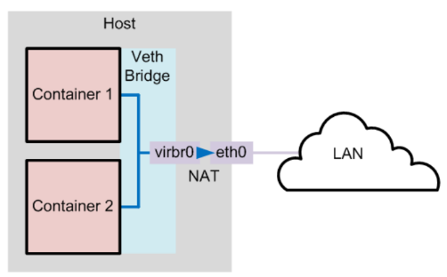
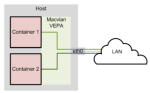

Как настроить внешнюю сеть для контейнеров в Linux (LXC)
Как настроить внешнюю сеть для контейнеров в Linux (LXC) 4 Как настроить внешнюю сеть для контейнеров в Linux (LXC)
Home / HOWTO / 4 Как настроить внешнюю сеть для контейнеров в Linux (LXC)
Цель руководства в том, чтобы показать как настроить контейнер LXC, который может подключаться к внешним сетям.
При настройке LXC можно использовать несколько сетевых режимов.
По умолчанию скрипт шаблона lxc-oracle устанавливает сеть, настраивая мост veth.
В этом режиме контейнер получает свой IP-адрес от сервера dnsmasq, который libvirtd выполняет в частной виртуальной мостовой сети (virbr0) между контейнером и хостом.
Хост позволяет контейнеру подключаться к остальной части сети с помощью правил NAT в iptables, но эти правила не разрешают входящие подключения к контейнеру.
И хост, и другие контейнеры на мосту veth имеют сетевой доступ к контейнеру через мост.


Если вы хотите, чтобы сетевые подключения извне хоста могли подключаться к контейнеру, у контейнера должен быть IP-адрес в той же сети, что и хост.
Одним из способов достижения этой конфигурации является использование моста Macvlan для создания независимой логической сети для контейнера.
Это может быть достигнуто с помощью моста macvlan, и в приведенном ниже скрипте показано, как его установить.
Скрипт основан на CentOS / RHEL 6 и должен работать и для CentOS / RHEL 7.
1. На главном хосте есть два интерфейса, и в настоящее время мост не создан.
[root@centos6-LXC container]# ifconfig
eth1 Link encap:Ethernet HWaddr 08:00:27:B2:16:F7
inet addr:XX.XX.22.189 Bcast:XX.XX.23.255 Mask:255.255.252.0
eth2 Link encap:Ethernet HWaddr 08:00:27:1C:2C:5F
inet6 addr: 2606:b400:c11:68:a00:27ff:fe1c:2c5f/64 Scope:Global
virbr0 Link encap:Ethernet HWaddr 52:54:00:3F:E9:36
inet addr:192.168.122.1 Bcast:192.168.122.255 Mask:255.255.255.0
UP BROADCAST MULTICAST MTU:1500 Metric:1
RX packets:0 errors:0 dropped:0 overruns:0 frame:0
TX packets:0 errors:0 dropped:0 overruns:0 carrier:0
collisions:0 txqueuelen:0
RX bytes:0 (0.0 b) TX bytes:0 (0.0 b)
2. Как создать новый мост на хост-узле:
[root@centos6-LXC container]# brctl addbr lxcbr1
[root@centos6-LXC container]# brctl addif lxcbr1 eth2
[root@centos6-LXC container]# brctl show
bridge name bridge id STP enabled interfaces
lxcbr1 8000.0800271c2c5f no eth2
virbr0 8000.5254003fe936 yes virbr0-nic
[root@centos6-LXC container]# ip link set lxcbr1 up
[root@centos6-LXC container]# ip link
2: eth1: [BROADCAST,MULTICAST,UP,LOWER_UP] mtu 1500 qdisc pfifo_fast state UP qlen 1000
link/ether 08:00:27:b2:16:f7 brd ff:ff:ff:ff:ff:ff
3: eth2: [BROADCAST,MULTICAST,UP,LOWER_UP] mtu 1500 qdisc pfifo_fast master lxcbr1 state UP qlen 1000
link/ether 08:00:27:1c:2c:5f brd ff:ff:ff:ff:ff:ff
6: lxcbr1: [BROADCAST,MULTICAST,UP,LOWER_UP] mtu 1500 qdisc noqueue state UP
link/ether 08:00:27:1c:2c:5f brd ff:ff:ff:ff:ff:ff
[root@centos6-LXC ~]# egrep -v "^$|#" /container/contnr01/config
lxc.rootfs = /container/contnr01/rootfs
lxc.include = /usr/share/lxc/config/oracle.common.conf
lxc.arch = x86_64
lxc.utsname = contnr01
lxc.cap.drop = sys_resource
lxc.cap.drop = setfcap setpcap
lxc.network.type = macvlan
lxc.network.flags = up
lxc.network.link = lxcbr1
lxc.network.macvlan.mode = bridge
lxc.network.name = eth0
lxc.network.mtu = 1500
lxc.network.hwaddr = fe:71:08:9d:10:58
3. Запуск контейнера lxc:
[root@centos6-LXC ~]# lxc-start --name contnr01
lxc-start: cgfs.c: handle_cgroup_settings: 2077 Device or resource busy - failed to set memory.use_hierarchy to 1; continuing
INIT: version 2.86 booting
Welcome to Oracle Linux Oracle Linux Server release 5.9
Press 'I' to enter interactive startup.
Setting hostname contnr01: [ OK ]
Checking filesystems
WARNING: Your /etc/fstab does not contain the fsck passno
field. I will kludge around things for you, but you
should fix your /etc/fstab file as soon as you can.
[ OK ]
Mounting local filesystems: [ OK ]
Enabling /etc/fstab swaps: [ OK ]
INIT: Entering runlevel: 3
Entering non-interactive startup
Bringing up loopback interface: [ OK ]
Bringing up interface eth0:
Determining IP information for eth0... done.
[ OK ]
Mounting other filesystems: [ OK ]
Starting system logger: [ OK ]
Starting sshd: [ OK ]
Oracle Linux Server release 5.9
Kernel 3.8.13-98.2.1.el6uek.x86_64 on an x86_64
contnr01 login:
4. Из контейнера lxc показать конфигурацию и попытаться связаться с внешней сетью
[root@centos6-LXC ~]# lxc-attach -n contnr01
[root@contnr01 ~]# hostname
contnr01
[root@contnr01 ~]# ifconfig
eth0 Link encap:Ethernet HWaddr FE:71:08:9D:10:58
inet addr:XX.XX.22.192 Bcast:XX.XX.23.255 Mask:255.255.252.0
inet6 addr: 2606:b400:c11:68:fc71:8ff:fe9d:1058/64 Scope:Global
inet6 addr: fe80::fc71:8ff:fe9d:1058/64 Scope:Link
UP BROADCAST RUNNING MULTICAST MTU:1500 Metric:1
RX packets:8950 errors:0 dropped:0 overruns:0 frame:0
TX packets:16 errors:0 dropped:0 overruns:0 carrier:0
collisions:0 txqueuelen:0
RX bytes:1217259 (1.1 MiB) TX bytes:2003 (1.9 KiB)
lo Link encap:Local Loopback
inet addr:127.0.0.1 Mask:255.0.0.0
inet6 addr: ::1/128 Scope:Host
UP LOOPBACK RUNNING MTU:65536 Metric:1
RX packets:0 errors:0 dropped:0 overruns:0 frame:0
TX packets:0 errors:0 dropped:0 overruns:0 carrier:0
collisions:0 txqueuelen:0
RX bytes:0 (0.0 b) TX bytes:0 (0.0 b)
[root@contnr01 ~]# cat /etc/sysconfig/network-scripts/ifcfg-eth0
DEVICE=eth0
BOOTPROTO=dhcp ### Can assign a dedicated or static IP
ONBOOT=yes
HOSTNAME=contnr01
DHCP_HOSTNAME=contnr01
TYPE=Ethernet
[root@contnr01 ~]# route -n
Kernel IP routing table
Destination Gateway Genmask Flags Metric Ref Use Iface
0.0.0.0 XX.XX.20.1 0.0.0.0 UG 0 0 0 eth0
XX.XX.20.0 0.0.0.0 255.255.252.0 U 0 0 0 eth0
169.254.0.0 0.0.0.0 255.255.0.0 U 0 0 0 eth0
Теперь вы можете пропинговать IP внешнего хоста, чтобы проверить соединение.
Примечание. Для контейнеров на хостах VMware измените настройки «Forge transmit» на Accept on vswitch , к которому подключена виртуальная машина. Если для параметра установлено значение « Accept», ESXi не сравнивает исходный и эффективный MAC-адреса.
Поделитесь статьей: